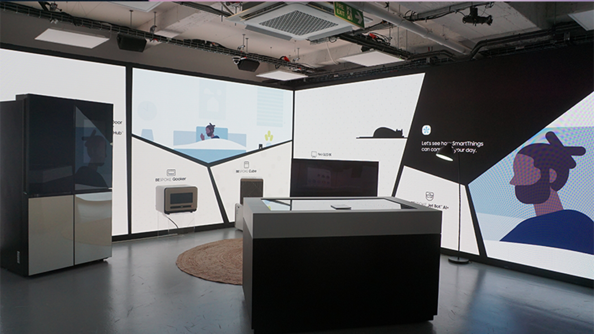
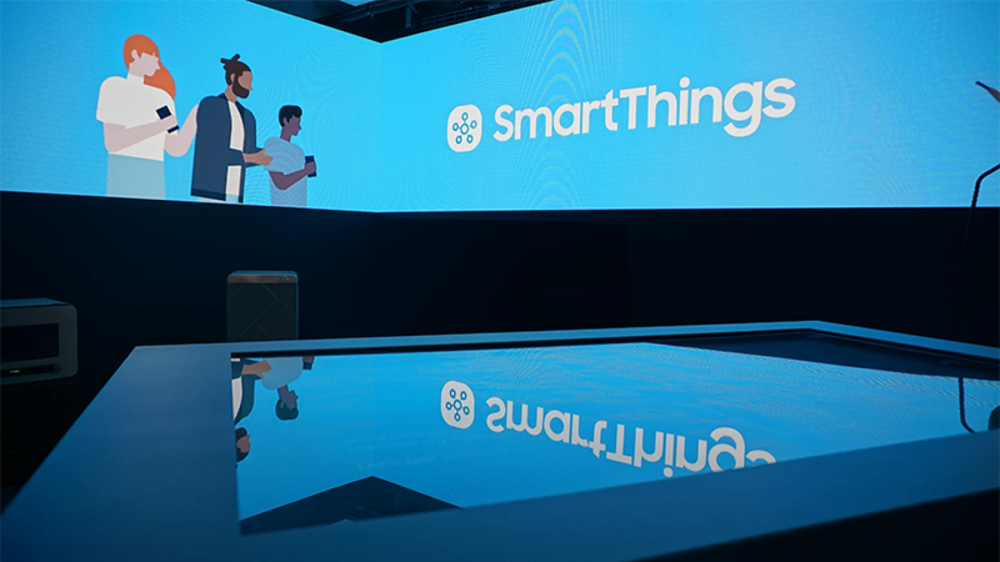
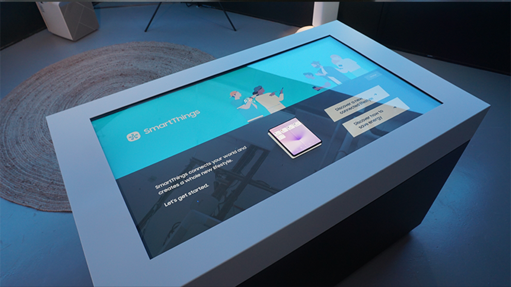
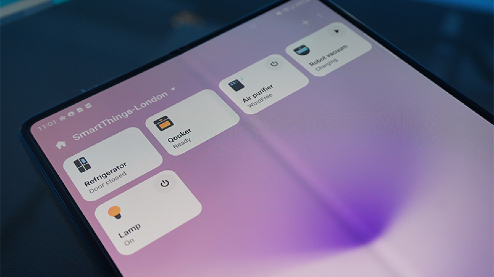
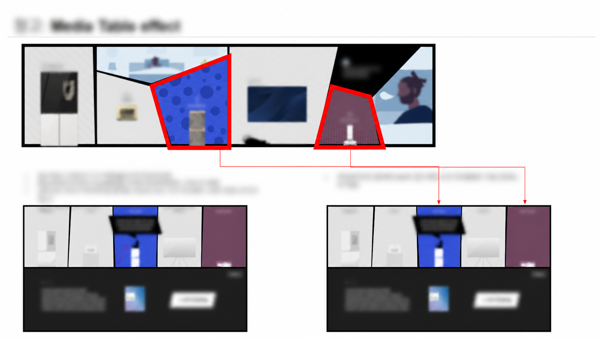
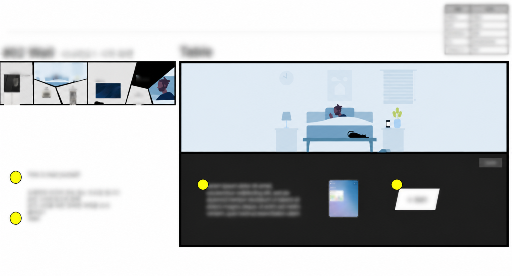
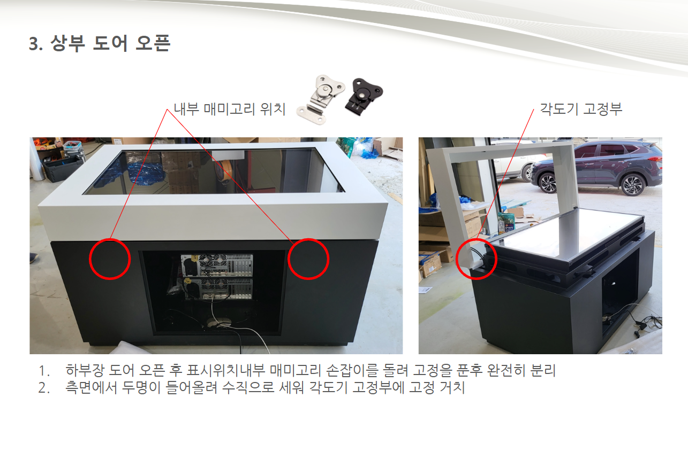
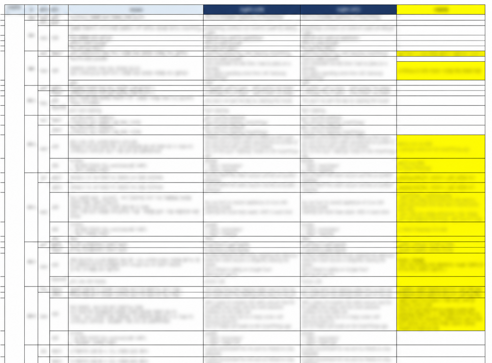
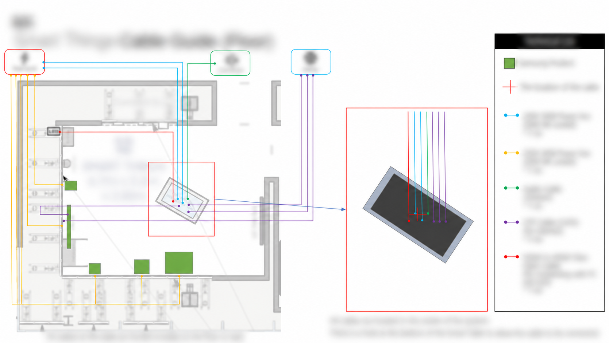

미디어 테이블과 연결 가전, LED 월로 구성된 체험 공간
Global Exhibition / Connected Experience
Galaxy Unpacked 글로벌 현장에서 미디어 테이블, 모바일 SmartThings, 연결 가전, LED 월의 역할을 하나의 체험 흐름으로 정리하고, 현장 운영이 가능한 연동 기준을 정의했습니다.

Galaxy Unpacked 현장에서 SmartThings가 만드는 생활의 변화를 직접 체험하도록 구성한 글로벌 전시 프로젝트입니다. 미디어월의 안내에서 모바일 SmartThings 제어, 실시간 콘텐츠 반응까지 이어지는 사용자 흐름을 설계하고, 모바일 신호값과 미디어월 반응 조건을 구현 요구사항으로 정리했습니다.

미디어 테이블과 연결 가전, LED 월로 구성된 체험 공간

모바일 SmartThings 체험 기기와 시스템을 수용하도록 제작한 미디어 테이블

모바일에서 SmartThings를 제어하고 미디어월 반응을 발생시키는 체험 화면
관람객이 미디어월에서 UX를 이해한 뒤 모바일 SmartThings를 직접 조작하고, 그 신호에 따라 미디어월이 반응하는 과정을 하나의 선형 경험으로 설계했습니다.
SmartThings 체험 방향과 디바이스 연동 요구사항 협의
전시 콘셉트와 UI 디자인 방향 협의
역할 범위: SmartThings API와 제어 기능을 직접 개발한 역할은 아닙니다. 모바일 조작 신호가 미디어월 반응으로 이어지는 체험 흐름과 연동 요구사항을 기획하고, 디자인·개발 협업과 미디어 테이블 제작, 현장 검증을 담당했습니다.

관람객이 모바일에서 SmartThings를 제어하면 해당 신호에 따라 미디어월 콘텐츠가 전환되도록 화면 상태와 반응 조건을 정리했습니다.

체험 시나리오를 화면별 상태와 전환 조건으로 분해하고, 제일기획 UI 담당자와 정보 우선순위·인터랙션·피드백 방식을 조율했습니다.
SmartThings 기능을 나열하기보다 관람객의 선택 직후 실제 기기와 미디어가 반응하도록 구성해, 연결의 가치를 행동의 결과로 이해하게 했습니다.
모바일 조작과 미디어월 화면이 서로 다르게 구현되지 않도록, 시나리오별 SmartThings 신호값과 화면 반응 조건을 연결해 디자인·개발 협업에 공유했습니다.
네트워크 지연이나 디바이스 미응답 상황에서도 다음 관람객의 체험으로 복귀할 수 있도록 초기화 조건과 운영 확인 항목을 정리하고 현장에서 동작을 검증했습니다.

장비 접근과 유지보수를 고려해 상부 도어와 내부 수납 구조를 협의하고 관련 내용 메뉴얼화

한·영문 체험 카피와 수정 이력을 시나리오별로 관리한 카피덱

전원·네트워크·오디오·영상 케이블과 테이블 연결 위치를 정리한 공간 시스템 설계 문서
UX/UI 흐름과 전자제품 상태 변화를 함께 검토한 청소 모드 협의 문서
미디어월 안내에서 모바일 SmartThings 제어로 이어지는 관람객 체험 여정 정의
모바일 제어 신호와 미디어월 콘텐츠 반응 조건을 구현 요구사항으로 구체화
모바일 체험 환경을 수용하는 미디어 테이블 HW 제작 및 시스템 정합성 검증
런던·뉴욕 글로벌 전시 적용을 위한 현장 검증과 반복 운영 기준 정리